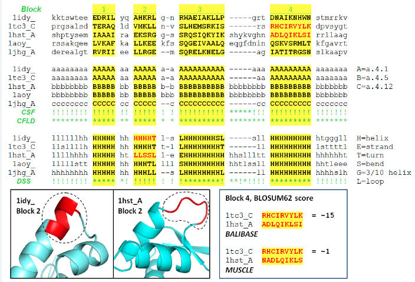

| MUSCLE manual |
| BALIBASE aligns a surface loop to a buried helix |
|
This is an example of a BALIBASE alignment that is wrong by their own alignment criteria. There are many examples like this. In this particular case, I believe the MUSCLE alignment is better than the BALIBASE alignment. See my paper for details.
 |